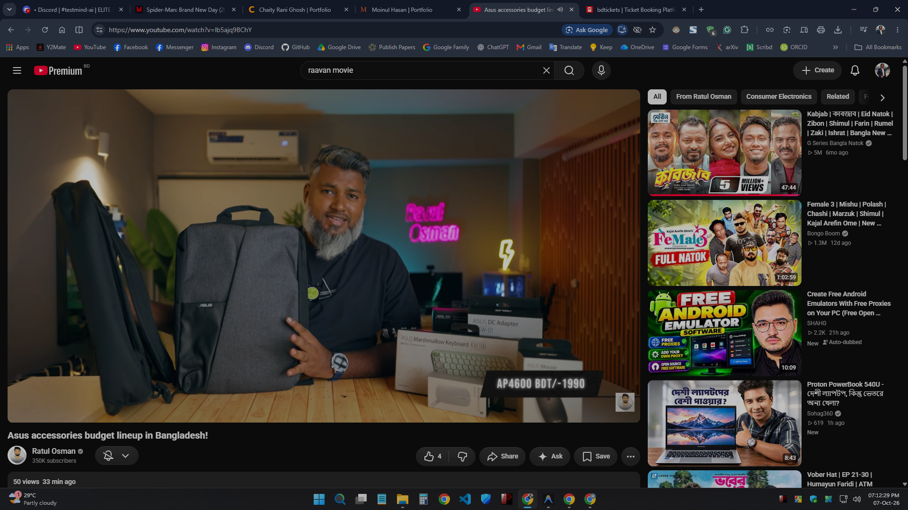

Healthy Habits — Diet Planning Platform
A comprehensive full-stack MVC nutrition management platform engineered with Laravel, MySQL, and JavaScript to track meal schedules, validate caloric requirements, and organize dietary regimens.
Project Overview
Maintaining balanced nutrition is crucial for preventive healthcare and athletic conditioning, yet individuals often struggle to consistently log meals, compute macronutrient ratios, and adhere to personalized dietary constraints.
Healthy Habits addresses this challenge by providing a robust, responsive web application that streamlines meal planning, recipe cataloging, and biometric tracking. Built using modern MVC design patterns, the platform integrates relational data schemas with custom mathematical calculators for Basal Metabolic Rate (BMR) and Total Daily Energy Expenditure (TDEE).
Key Features
Dynamic Meal Scheduler
Interactive calendar interface allowing users to organize daily breakfast, lunch, dinner, and snack routines with recurring weekly templates.
Caloric & Macro Analytics
Real-time client-side calculation of caloric intake, protein-to-carb distributions, and micronutrient targets with progress visualizations.
Authentication & Security
Multi-guard authentication, password hashing with bcrypt, CSRF protection tokens, and sanitized SQL parameterized queries.
Nutrition & Recipe Database
Indexed relational catalog of food ingredients with searchable dietary tags (vegan, keto, gluten-free, low-sodium).